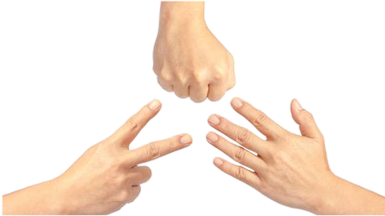
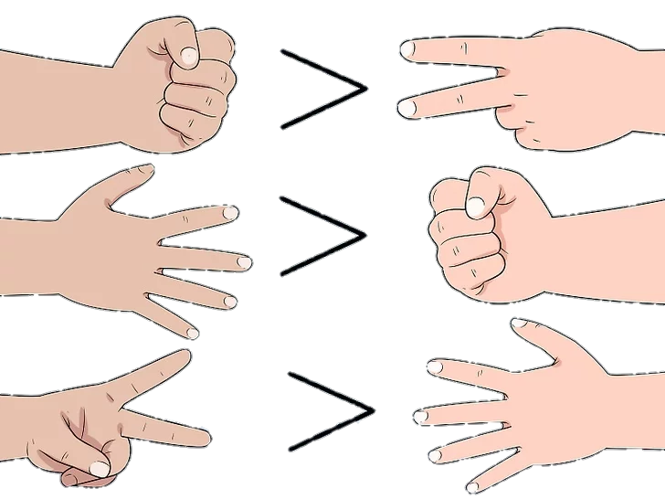
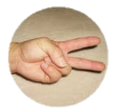
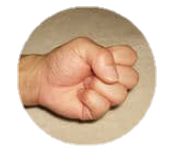

Penjelasan
Sejarah Permainan gunting batu kertas ini tidak ada yang tau pasti juga, namun dinegara aslanya Jepang disebut dengan JANKEN.
Di Indoensia ini disebut dengan suwit, siapa yang tidak tau permainan ini dan belum pernah memainkannya?
Dari anak kecil sampai orang dewasa saya rasa pernah memainkannya, permainan yang sangat populer deberbagai kalangan.
Sejarah permain gunting batu kertas ini berawal dari ke isengan anak kecil di jepang yang sedang bermain, dia menemukan game ini dan memainkannya.
Karena 2 orang anak kecil ini suka memainkannya dan dilihat oleh teman lainnya maka permainan ini semakin banyak dimainkan.
Permainan sederhana yang tidak memerlukan alat ini diperkirakan mulai ditemukan pada tahun 206 Sebelum Masehi.
Sejarah permainan gunting batu kertas awalnya memiliki lebih dari 3 gestur tangan yang mengambarkannya.
Oleh 2 orang yang memiliki nama Edo dan Meiji permainan ini dikembangkan lagi menjadi 3 gesture tangan yakni gunting batu kertas.
Cara Bermain
Gesture kertas mampu mengalahkan batu, batu bisa mengalahkan gunting, gunting mampu mengalahkan kertas.
Kedua pemain harus berdiri atau duduk berhadapan, masing - masing dapat menyusun strategi gesture tangan apa yang akan dikeluarkan.
Kedua pemain harus mengeluarkan gesture tangan secara bersamaan, jika ada pemain yang terlambat mengeluarkan gesture tangan maka akan diulang kembali.
Apabila kedua orang ini mengeluarkan gesture tangan yang sama juga akan mengulang permainan sampai didapat pemenang dan yang kalah dalam suwit.
Biasanya suwit ini digunakan untuk menentukan suatu awal permainan, serupa juga dengan pelemparan koin dan dadu pada umumnya
Hanya saja untuk suwit ini tidak menggunakan media apapun, hanya gestur tangan saja yang dipakai.Janken atau suwit jepang kini sudah dikenal oleh masyarakat Indonesia dan banyak juga dimainkan.
Lambang
Gunting dilambangkan dengan 2 jari yaitu telunjuk dan jari tengah

Kertas dilambangkan dengan lima jari yang dibuka lebar

Batu dilambangkan dengan kepalan tangan
Game
Player
0
Computer
0
Gunting Batu Kertas
Pilih Pilihan mu